色盲色弱测试图
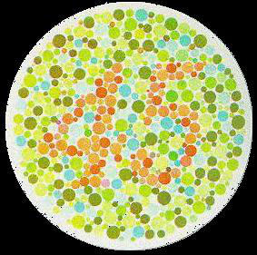
色盲测试图1
正常人看到45，色盲患者看不到数字
正常人看到45，色盲患者看不到数字
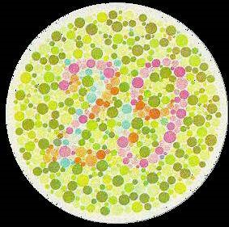
色盲测试图2
正常人看到29，色盲患者看到数字70
正常人看到29，色盲患者看到数字70
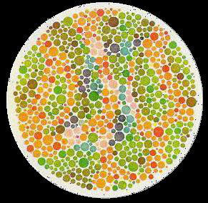
色盲测试图3
正常人看不到数字，色盲患者看到5
正常人看不到数字，色盲患者看到5
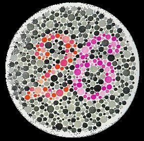
色盲测试图4
正常为26，红色盲看到6，绿色盲看到2
正常为26，红色盲看到6，绿色盲看到2
最全面的色盲检查彩图，可以检色色盲类型：红色盲、绿色盲、红绿色盲、红色弱、绿色弱
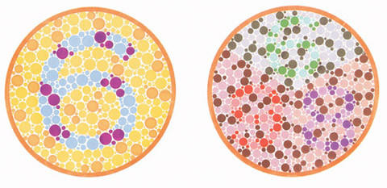
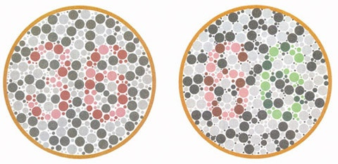

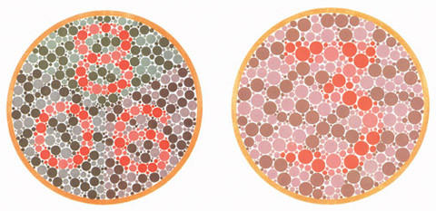
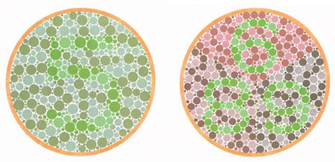
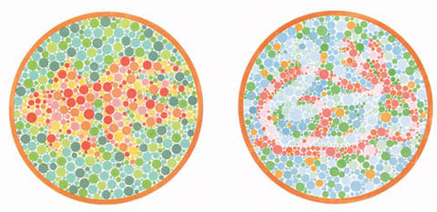
色觉检查结果对照表
| 图号 | 色觉正常者辨认结果 | 色盲/色弱辨认结果 | 色盲/色弱类型 | 备注 |
|---|---|---|---|---|
| 图1-1 | 6 | 6 | - | 示例图 |
| 图1-2 | 6,9,8 | - | - | - |
| 图1-3 | 3,6 | 不能读 | 红色盲 | 检出红色盲 |
| 图1-4 | 6,6 | 不能读 | 红绿色盲 | 检出红绿色盲 |
| 图1-5 | 6 | 全不能或都部分不能读 | 绿色弱 | 绿色弱分类总图 |
| 图1-6 | 9 | - | - | - |
| 图2-1 | 8，0，6 | 不能读 | 红色盲 | 红色盲检出图 |
| 图2-2 | 3 | 不能读 | 红色弱 | 红色弱分类总图 |
| 图2-3 | 5 | - | - | - |
| 图2-4 | 6,8,9 | 不能读 | 绿色盲 | 绿色盲检出总图 |
| 图2-5 | 金鱼 | - | - | - |
| 图2-6 | 鸭，兔 | 鸭 | 红绿色觉异常 | 检出红色盲，部分色弱 |
若你不幸被测试为色盲或色弱的话，希望你不要悲伤，遗传决定的，通过下面的可以进一步确定为何种色弱。辨色能力判别。

在此图中，A清楚为红色盲
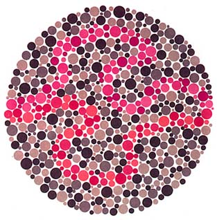
在此图中，C清楚是绿色色盲
在此图中，红绿色盲者中的红色盲者只能找到紫色的线，而绿色盲者只能找到红色的线，但红绿色弱者、正常者则两线都找得到。
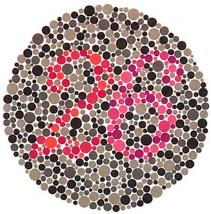
在此图中，红绿色盲者中的红色盲者能读出６，而绿色盲者能读出２，但红绿色弱者及正常者则两个字都能读出来。

正常者看到一幅“牛”的图案，如看到的是一头“狗”，表示可能是色盲色弱。

正常者看到6，红绿色盲者及红绿色弱者看到5，而全色盲和全色弱看不出上面的两个字。

红绿色盲者及红绿色弱者大多都看成5，色全色盲及正常者大多都标不出来。

红绿色盲者及红绿色弱者都看成6，但正常及全色盲大多都标不出来。
使用说明：
- 1、按提示识别图中的数字/图形，用于自测色觉。
- 2、仅供参考，出现识别困难请咨询专业机构。
示例：
- 示例：正常视力可识别“12/8/6”等；若无法辨认多个测试图，建议进一步检查。